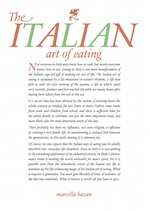
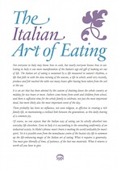
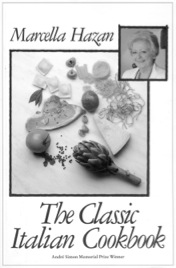
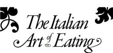

I am very grateful for advice I received about the design from Anthony Viney. Anthony produced a few rough ideas which I was quite taken with and – since he’s a proper artist – are more creative than my own attempt.
Anthony’s ideas – sorry you’re not getting these
 
Nevertheless, I went ahead with my own ideas because I wanted to maintain the ‘feel’ of the Marcella’s paperbacks. I was also acutely aware of the limitations of the machinery we had available to us!

The font used is Garamond. The reason I chose Garamond is that the paperback versions of Marcella’s books all used Garamond. The first book (a hardback) was originally published in 1973 and I have not seen one, but the use of Garamond by Macmillan (who published all Marcella’s paperbacks) makes this classic instantly recognisable.
Today, there are many digital varieties of Garamond available (as well as the revivalist Sabon). The Garamond I was using was made for the Ludlow. It seems that prior to digitisation the distinction between different foundries was much less of an issue for printers. Most of them believed the type created by the Ludlow machine to be similar enough to the Garamond they already had in their type cases (purchased from a different foundry), and would often use the Ludlow to create sizes they didn’t have - eg, for headlines. The printers, being practical sorts, didn’t get too fussy if the character sets weren’t perfectly the same. Nowadays a different version of a digital font can cause all sorts of production issues if things aren’t kept under control.

The title text The Italian Art of Eating is also set in Garamond, but it is at too large a size to be cast by the Ludlow, so the characters were etched in a magnesium plate from a digital version I created on the Mac. The characters in the title are very tightly tracked together, which – as you can see – was the style used on the original ‘Classic’ book’s cover, though many typographers consider this an abomination. The swash characters in the title, and the vine leaf ornaments, are from the font’s alternate glyph set, as is the fancy ‘z’ in Marcella’s name. Only the ‘g’ does not really belong as a true glyph from the Garamond character set - I made that up in Illustrator.